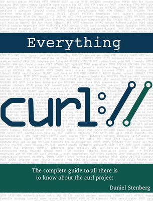

Everything curl is an extensive, detailed and totally free book, available in multiple formats.
Learn how to use curl. How to use libcurl. How to build them from source or perhaps how the curl project accepts contributions. There is something for everyone in this, from the casual first-time users to the experienced libcurl hackers.
Everything curl is written by Daniel Stenberg but is an open project that accepts your contributions and help. The book is constantly updated.
 SUBTITLE(Read it here)
ePUB, PDF add offline HTML versions are available. The PDF is at some 550 pages. SUBTITLE(Book source)
The book sources and contents are hosted on Github. SUBTITLE(A printed version?)
You could previously buy the 2018 Edition, a 250-page dead-tree printed paperback version of the book (ISBN 978-91-639-6501-2). The printed version is sold out since a long time back and there has been no further efforts to make additional editions available.
Perhaps it will happen again in the future. #include "_footer.html"